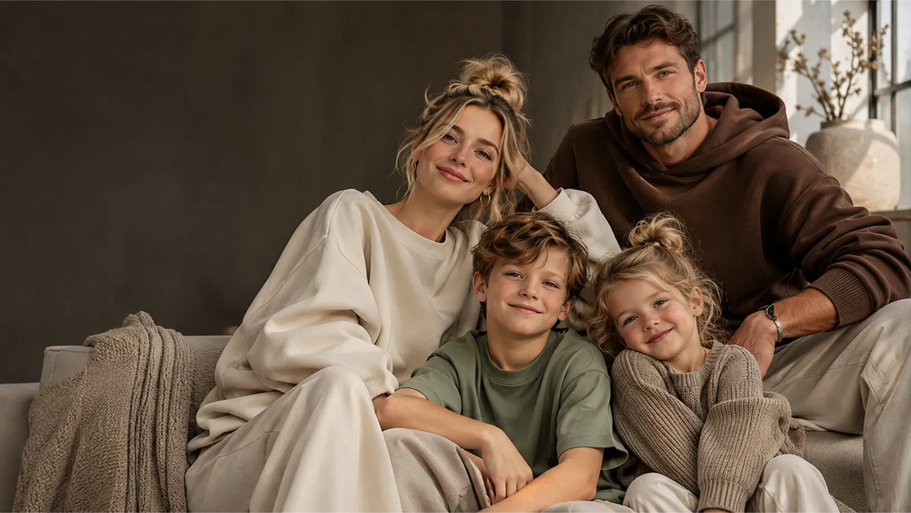

FITMYSTYLE / FAMILYLOOK STUDIOJedna rodzina.
Jedna rodzina.
Spójny styl. Twój projekt.
Dobierz fasony dla dorosłych, dzieci i niemowląt. Zmierz każdą osobę krok po kroku i przygotuj osobne karty techniczne dla krawca.
Bez kosztu AI
Twoje zestawy
Każda osoba zachowuje swój rozmiar i pomiary